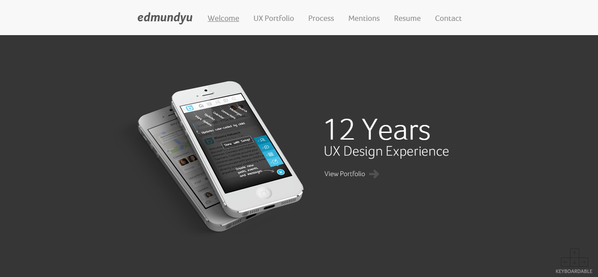

First of all, thank you for taking time out of your day to visit my portfolio and view my work. As a cognitive science student interested in UX design and photography, it's essential that I create a portfolio that showcases my skills and experience, as well as my thought and design processes. This is a major platform in which employers and clients can see the work I do and how I work within the realm of design and development.
INSPIRATION
Over time and perusing through the r/userexperience subreddit, I found some nice UX portfolios online that I could use to gain some ideas into what I should do for my own portfolio. Kind of a casual competitive analysis, I tried to look at both the actual design and the case studies each person had, to get some inspiration on where to start. Some of my current favorites are:

PROBLEM
Majority of the examples above are by UXers who have been in the industry for several years. A couple of them are recent graduates with a couple years of industry experience. This means they have well entrenched case studies, experience, and not to mention front end development skills just by looking at their portfolios. As an undergraduate student, my problem that I had to solve was:
"How do I showcase my skills and aspirations with no industry experience and a lack of coding skills?"
What I noticed from every UX portfolio is that each and every one has some sort of branding, identity, and style unique to them and runs consistently throughout their portfolio. Not only that, but all of them are fairly minimal. They don't have any crazy animations or anything which definitely contributes to good user design and most of all no-nonsense, straight-to-the-point, easy-to-understand approach to how they present themselves and their sites. This was important because you can still showcase good work without needing anything frilly, which was good since I can't code as well as those in computer science majors. Regarding their actual work, they seemed to have process oriented layout in how they explain their case studies, similar to our design processes and reports/papers we're required to write in the design courses I've taken. Thus I came up with a decent solution.
I planned to try to highlight whatever skills and qualifications I have from what I've learned in my courses. With no experience, I have to show that I at least have the basics of design down.
Secondly, I needed to try to explain the projects I've done in my classes in detail and show that it is a learning curve. Since I don't have any experience, I have to show that I learned more about the design process, as well as the challenges I faced and how I dealt with them, as well as the takeaways that I can use to improve for the next time around.
Lastly, I have to somehow brand myself using the little coding skills I have without straying too much away from the basics. I would need to essentially teach myself on my own time how to code HTML, CSS and JavaScript, and show that I'm able to use the basics in a clean and tasteful fashion. If I can get the basics down and try to add some flavor to it, I could try to set myself apart from others.
Secondly, I needed to try to explain the projects I've done in my classes in detail and show that it is a learning curve. Since I don't have any experience, I have to show that I learned more about the design process, as well as the challenges I faced and how I dealt with them, as well as the takeaways that I can use to improve for the next time around.
Lastly, I have to somehow brand myself using the little coding skills I have without straying too much away from the basics. I would need to essentially teach myself on my own time how to code HTML, CSS and JavaScript, and show that I'm able to use the basics in a clean and tasteful fashion. If I can get the basics down and try to add some flavor to it, I could try to set myself apart from others.
PROTOTYPING
1ST ITERATION
Honestly at first, I dived straight into trying to figure out how to code HTML and CSS. At the very beginning, I went on codepen.io to find some inspiration for an index page and just some code that could animate a title when you visit the page. I really didn't know what I was doing and just experimented putting words everywhere and trying to understand the codepen code I was using. All I knew is that I wanted to have an animated title and have that yellow to green gradient bar at the top to match my current design on my resume.
2ND ITERATION
After figuring that I didn't know how to code right away, I used some templates from HTML5co to get me started, thinking I could reverse engineer it to how I would want it. It turned out it didn't make any sense to me because it was someone elses code and there was so much going on I had no idea where to look and how to modify it the way I want it to be. I went with 2 different templates to see which I liked the best, and which best fit my mental model of what the site architecture should be.

I actually pursued and almost finished the 3rd template because it was simple and allowed me to have the architecture I wanted that made sense. Although I was near finishing, I felt dissatisfied that I had basically just changed code and moved it around and added my own words and images. It lacked the identity and branding I was looking for since it was a template completely made by someone else. 3RD ITERATION
I decided in order to get somewhere in UX design and making my portfolio the way I want it, I needed to learn how to code and I'd just have to do it the hard way and do it from square 1. I pulled out a notebook and sketched what I think should be my portfolio.
Although I sketched it with a desktop viewspace, I mainly wanted to focus on a mobile first approach, where I design it to fit various devices by using responsive code and Bootstrap which could then fit to desktop since I designed for small then big, rather than big then small, which could pose some serious formatting and styling issues. To do this approach, I constantly used the inspect feature and mobile device viewspace in google chrome to see if it's responsive.
Utilizing a mobile first approach allows designers to build products that can scale to any users devices, especially how a plethora of different resolutions and devices being used nowadays. If you design for desktop only, you're bound to run into formatting issues when on mobile, which affects readability and usability, which can then ruin the whole experience for the user. I have to take into consideration the different types of devices that employers and clients use to show that I take that into consideration.
Honestly at first, I dived straight into trying to figure out how to code HTML and CSS. At the very beginning, I went on codepen.io to find some inspiration for an index page and just some code that could animate a title when you visit the page. I really didn't know what I was doing and just experimented putting words everywhere and trying to understand the codepen code I was using. All I knew is that I wanted to have an animated title and have that yellow to green gradient bar at the top to match my current design on my resume.
2ND ITERATION
After figuring that I didn't know how to code right away, I used some templates from HTML5co to get me started, thinking I could reverse engineer it to how I would want it. It turned out it didn't make any sense to me because it was someone elses code and there was so much going on I had no idea where to look and how to modify it the way I want it to be. I went with 2 different templates to see which I liked the best, and which best fit my mental model of what the site architecture should be.
I actually pursued and almost finished the 3rd template because it was simple and allowed me to have the architecture I wanted that made sense. Although I was near finishing, I felt dissatisfied that I had basically just changed code and moved it around and added my own words and images. It lacked the identity and branding I was looking for since it was a template completely made by someone else. 3RD ITERATION
I decided in order to get somewhere in UX design and making my portfolio the way I want it, I needed to learn how to code and I'd just have to do it the hard way and do it from square 1. I pulled out a notebook and sketched what I think should be my portfolio.
Although I sketched it with a desktop viewspace, I mainly wanted to focus on a mobile first approach, where I design it to fit various devices by using responsive code and Bootstrap which could then fit to desktop since I designed for small then big, rather than big then small, which could pose some serious formatting and styling issues. To do this approach, I constantly used the inspect feature and mobile device viewspace in google chrome to see if it's responsive.
Utilizing a mobile first approach allows designers to build products that can scale to any users devices, especially how a plethora of different resolutions and devices being used nowadays. If you design for desktop only, you're bound to run into formatting issues when on mobile, which affects readability and usability, which can then ruin the whole experience for the user. I have to take into consideration the different types of devices that employers and clients use to show that I take that into consideration.
DEVELOPMENT
Although I'm trying to market myself mainly as a designer, I do admit that I eventually would like to move into developing as well. I decided that I'd need to learn from the ground up than use templates this time around. Learning to develop is something that I'll eventually need to learn so might as well start now, especially if I want the design of my portfolio to be how I want it. If I could that, then I get to showcase a new skill. For my portfolio, I used Sublime Text 3 to code in HTML, CSS, and JavaScript, while utilizing Bootstrap to my advantage for the responsive grid-system that helps with my mobile first approach.
CONCLUSION
Although I had to do some Google-fu to figure out how to do stuff with the help of StackOverflow and CSSTricks, coding in HTML and CSS began to click and next thing I know, I'm developing a functional design to just how I wanted it to be. Overall, I'm very very very proud with what I've accomplished and what I'm continuing to learn. I'm ecstatic that I was able to develop a portfolio tailored to my needs that I hope establishes my identity and helps propel me further into the field of design. Cheers!